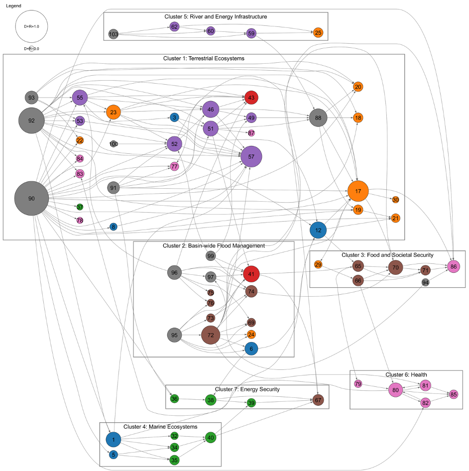
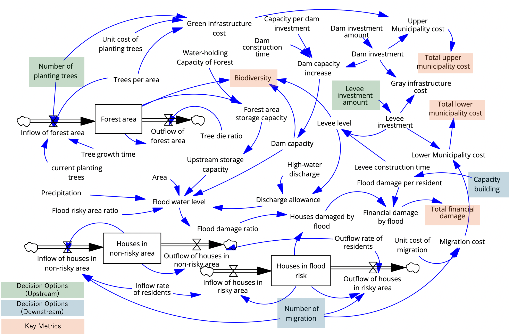

Working Group 1
分野横断の相互作用をモデル化し、未来の選択肢をつくる
Modeling Cross-sectoral Interactions to Create Future Options
防災、農業、水資源、生態系、健康、都市生活など多様な分野の施策が相互に与える影響をモデル化し、 複数の目的指標と不確実性を踏まえた適応パスウェイ候補を生成します。
Models the mutual impacts of measures across diverse sectors—disaster prevention, agriculture, water resources, ecosystems, health, and urban life—to generate adaptation pathway candidates considering multiple objectives and uncertainty.
社会的課題
Societal Challenges
気候変動適応では、防災、農業、水資源、生態系、健康、都市生活など、多様な分野の施策が相互に影響し合います。 しかし、実際の政策検討では、分野ごとの影響評価や施策検討に留まりやすく、ある施策が別の分野や地域にもたらす 副作用や相乗効果が十分に見えていません。
その結果、個別分野では合理的に見える施策が、全体としては非効率な結果を生む可能性があります。自治体が 中長期的な適応計画やロードマップを検討する上でも、分野横断の相互作用を理解し、複数の施策を組み合わせて 評価するための基盤が不足しています。
In climate change adaptation, measures across diverse sectors—disaster prevention, agriculture, water resources, ecosystems, health, and urban life—interact with each other. However, actual policy discussions tend to remain within sector-specific impact assessments, failing to adequately reveal side effects and synergies that measures in one sector may bring to others.
As a result, measures that appear rational within individual sectors may produce inefficient outcomes overall. Even when municipalities develop medium- to long-term adaptation plans and roadmaps, there is a lack of foundational tools for understanding cross-sectoral interactions and evaluating combinations of multiple measures.
学術的課題
Academic Challenges
WG1の学術的課題は、分野横断的な気候変動影響と適応策の相互作用を、どのようにモデル化し、妥当性を検証するかにあります。
気候変動リスクの相互連関については、Yokohata et al.（2019）が気候リスク間の因果関係を抽出・可視化し、 気候変動影響が分野をまたいで連鎖することを示しています。また、IPCC AR6 WGII Chapter 17でも、適応オプション、 リスク管理、ガバナンス、意思決定の条件が整理されており、現在の適応策が将来リスクや持続可能な発展に与える影響を 継続的に見直す必要性が示されています。
一方で、既存のインパクトチェーンやロジックモデルは、影響関係の可視化には有用であるものの、時間遅れ、 フィードバック、非線形性、複数目的指標間のトレードオフを定量的・動的に扱うには限界があります。水資源管理などでは システムダイナミクスを用いた適応策評価の蓄積があり、Gohari et al.（2017）などは、水資源開発と生物物理・社会経済 サブシステムのフィードバックを考慮した適応策評価を行っています。しかし、気候変動適応全体を分野横断的に扱い、 地域間・部局間の意思決定や複数目的の適応パスウェイ設計まで接続するモデルは十分に確立されていません。
さらに、Haasnoot et al.（2013）によるDAPPや、Kasprzyk et al.（2013）によるMORDMは、不確実性下での ロバストな意思決定や適応パスウェイ設計に有効な枠組みを提供しています。しかし、本プロジェクトで扱う課題では、 外部不確実性だけでなく、将来における目標指標や価値観の変化、主体ごとの評価基準の違いも含めて扱う必要があります。 この点で、モデル構造、因果関係、評価指標、パスウェイ生成を統合的に扱う方法論が学術的課題となります。
特に、利用可能なデータが限られ、主要な要因が完全には洗い出されていない状況で、既存知見、専門家判断、 オープンデータ、因果推論・因果探索をどのように組み合わせてモデルを構築・検証するかが重要な論点です。
The academic challenge of WG1 lies in how to model and validate the cross-sectoral interactions between climate change impacts and adaptation measures.
Regarding the interconnections of climate change risks, Yokohata et al. (2019) extracted and visualized causal relationships among climate risks, demonstrating how climate change impacts cascade across sectors. IPCC AR6 WGII Chapter 17 also organizes adaptation options, risk management, governance, and decision-making conditions, highlighting the need to continuously reassess how current adaptation measures affect future risks and sustainable development.
However, existing impact chains and logic models, while useful for visualizing impact relationships, have limitations in quantitatively and dynamically handling time delays, feedback, nonlinearity, and trade-offs among multiple objective indicators. The key academic challenge lies in establishing an integrative methodology that addresses model structure, causal relationships, evaluation indicators, and pathway generation in a unified framework.
研究上の問い
Research Questions
- 分野横断の相互作用は、どこで、どのように発生するのか。
- 気候変動影響と適応策の因果関係を、どのようにモデル化できるのか。
- 異なる時間スケール・空間スケールを持つ要素を、どのように統合モデルとして接続するのか。
- 複数の目的指標を持つ適応策を、どのように評価できるのか。
- 不確実な将来に対して、どのような適応パスウェイ候補を提示できるのか。
- モデルの妥当性を、データや専門家知見を用いてどのように検証できるのか。
- Where and how do cross-sectoral interactions occur?
- How can causal relationships between climate change impacts and adaptation measures be modeled?
- How can elements with different temporal and spatial scales be connected as an integrated model?
- How can adaptation measures with multiple objective indicators be evaluated?
- What adaptation pathway candidates can be presented for an uncertain future?
- How can model validity be verified using data and expert knowledge?
主な活動
Key Activities
- 分野横断影響関係の整理とシステム工学的手法による構造化
- 流域治水・水資源管理等を対象としたシステムダイナミクスモデルの構築
- 複数目的指標による施策評価と不確実性を踏まえたシナリオ生成
- DAPP/DMDUの拡張を通じた適応パスウェイ検討
- オープンデータを用いたモデル検証基盤の検討
- 因果推論・因果探索を用いたモデル妥当性評価
- Organizing cross-sectoral impact relationships and structuring them using systems engineering approaches
- Building system dynamics models for watershed flood control and water resource management
- Multi-objective measure evaluation and scenario generation under uncertainty
- Exploring adaptation pathways through DAPP/DMDU extensions
- Developing model verification platforms using open data
- Evaluating model validity through causal inference and causal discovery


WG1の成果
WG1 Outputs
WG1の成果は、気候変動適応を中長期的な未来構想に用いるための「分野横断モデルと適応パスウェイ候補」です。 具体的には、以下の成果を目指します。
WG1's outputs are "cross-sectoral models and adaptation pathway candidates" for using climate change adaptation in medium- to long-term future design. Specifically, we aim for the following:
- 気候変動影響と適応策の分野横断的な関係を整理した因果構造マップ
- 流域治水・水資源管理等を対象としたシステムダイナミクスモデル
- 施策パッケージが複数の評価指標に与える影響の可視化手法
- 気候、人口、土地利用、社会経済条件などの不確実性を踏まえたシナリオ群
- 複数目的指標に基づく適応パスウェイ候補
- オープンデータや専門家知見を用いたモデル検証基盤
- WG2のワークショップで利用可能なシミュレーション・可視化コンテンツ
- WG3のゲーム理論分析で用いる利得構造、評価指標、シナリオ条件の基礎情報
- Causal structure maps organizing cross-sectoral relationships between climate change impacts and adaptation measures
- System dynamics models for watershed flood control and water resource management
- Visualization methods for the impact of measure packages on multiple evaluation indicators
- Scenario sets accounting for uncertainties in climate, population, land use, and socioeconomic conditions
- Adaptation pathway candidates based on multiple objective indicators
- Model verification platforms using open data and expert knowledge
- Simulation and visualization content usable in WG2 workshops
- Foundational information on payoff structures, evaluation indicators, and scenario conditions for WG3's game-theoretic analysis
これにより、どの施策がどの分野に影響するのか、どのようなシナジーやトレードオフがあるのか、どの将来条件のもとで どの適応パスウェイが有効になりうるのかを示します。
Through these outputs, we demonstrate which measures affect which sectors, what synergies and trade-offs exist, and under which future conditions certain adaptation pathways may be effective.
WG間の連続性： WG1で構築するモデル・シナリオ・適応パスウェイ候補は、WG2のインタラクティブGUI・タンジブルUI・ シリアスゲームの基盤となり、またWG3のゲーム理論分析における施策オプション・評価指標・利得構造の 基礎情報としても活用されます。
Inter-WG Connectivity: The models, scenarios, and adaptation pathway candidates built by WG1 serve as the foundation for WG2's interactive GUIs, tangible UIs, and serious games, and are also utilized as foundational information for WG3's game-theoretic analysis of measure options, evaluation indicators, and payoff structures.